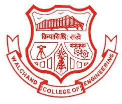

|  |
Walchand College of Engineering is a college in the city of Sangli, Maharashtra, India. The WCE campus is situated on nearly 90 acres of land in Vishrambag, roughly midway between the twin cities of Sangli and Miraj. The college was established in 1947 by the Hon. (Late) Dhondumama Sathe and began with an undergraduate course in Civil Engineering with a capacity of 60 students. It was affiliated with Bombay University in 1947. After Pune University was set up in 1948, the college became affiliated with Pune University. In 1955, the college was renamed after Walchand Hirachand, an industrialist. Since the establishment of Shivaji University, at Kolhapur in 1962, Walchand College of Engineering, Sangli has been affiliated with Shivaji University. Since 2007, it has been an autonomous college offering the B.Tech. degree in Maharashtra with 'financial and academic autonomy'. It is known for its vast campus and placement.
The college has had a hostel facility for males since 1958 and for females since 1987. There are eight hostel blocks (D1 to D8) with high speed internet connectivity through WiFi, and a capacity of 738 students. In response to the recent trend of increasing female enrollment, two hostel blocks were suitably modified and converted into women's hostels. At the initiative of the Chairman, Shri Ajit Gulabchand, another hostel block with a capacity of 46 students was converted into a cyber hostel with internet connectivity. Over 300 female students are presently inhabiting hostel accommodations. There is a plan to construct a new hostel for women, as per the new Campus Master Plan developed by the firm HOK (USA).
Various lab facilities are provided by IT department to students.
The IT department in WCE has various Moodle addresses. Students have direct access to these models. They can check their attendance, and can upload their assignments. Teachers can upload assignments for the students. Quizzes on some subjects are held on the moodle.